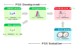

vignettes/pgs-construction-process.Rmd
pgs-construction-process.RmdPGS is calculated as a weighted sum of several risk variants from a genome-wide association study in one or more samples with multiple p-value thresholds. The effect sizes are typically estimated as \(\beta\) (beta coefficients) or as odds ratios. After the PGS is calculated in one sample, the distribution of individual PGS is assessed in another in an independent sample set.
Adapted from Konuma & Okada (2021), CC BY 4.0.

In the PGS Catalog, cohorts and samples are annotated according to their utilisation context, i.e. stage, in the PGS construction process. In quincunx, the stage is indicated by the stage variable that can have one of these values:
gwas: to annotate samples used to derive variant associations (GWAS)dev: to annotate samples used in the development or training of PGSsgwas/dev: as a catch-all term to annotate samples used either in gwas or dev stageseval: to annotate samples used in the PGS evaluation stageYou will encounter the stage annotation in tables of objects returned by quincunx’s retrieval functions. Here are a few examples:
scores object
get_scores('PGS000327')@samples
#> # A tibble: 2 × 15
#> pgs_id sampl…¹ stage sampl…² sampl…³ sampl…⁴ sampl…⁵ pheno…⁶ ances…⁷ ances…⁸
#> <chr> <int> <chr> <int> <int> <int> <dbl> <chr> <chr> <chr>
#> 1 PGS0003… 1 gwas 46350 NA NA NA Cases … Europe… NA
#> 2 PGS0003… 2 dev 28592 10461 18131 NA Cases … Europe… NA
#> # … with 5 more variables: country <chr>,
#> # ancestry_additional_description <chr>, study_id <chr>, pubmed_id <chr>,
#> # cohorts_additional_description <chr>, and abbreviated variable names
#> # ¹sample_id, ²sample_size, ³sample_cases, ⁴sample_controls,
#> # ⁵sample_percent_male, ⁶phenotype_description, ⁷ancestry_category, ⁸ancestry
#> # ℹ Use `colnames()` to see all variable namessample_sets object
get_sample_sets(pgs_id = 'PGS000327')@samples
#> # A tibble: 1 × 15
#> pss_id sampl…¹ stage sampl…² sampl…³ sampl…⁴ sampl…⁵ pheno…⁶ ances…⁷ ances…⁸
#> <chr> <int> <chr> <int> <int> <int> <dbl> <chr> <chr> <chr>
#> 1 PSS0004… 1 eval 7148 2615 4532 NA Cases … Europe… NA
#> # … with 5 more variables: country <chr>,
#> # ancestry_additional_description <chr>, study_id <chr>, pubmed_id <chr>,
#> # cohorts_additional_description <chr>, and abbreviated variable names
#> # ¹sample_id, ²sample_size, ³sample_cases, ⁴sample_controls,
#> # ⁵sample_percent_male, ⁶phenotype_description, ⁷ancestry_category, ⁸ancestry
#> # ℹ Use `colnames()` to see all variable namesperformance_metrics object
get_performance_metrics(pgs_id = 'PGS000327')@samples
#> # A tibble: 1 × 16
#> ppm_id pss_id sampl…¹ stage sampl…² sampl…³ sampl…⁴ sampl…⁵ pheno…⁶ ances…⁷
#> <chr> <chr> <int> <chr> <int> <int> <int> <dbl> <chr> <chr>
#> 1 PPM000879 PSS00… 1 eval 7148 2615 4532 NA Cases … Europe…
#> # … with 6 more variables: ancestry <chr>, country <chr>,
#> # ancestry_additional_description <chr>, study_id <chr>, pubmed_id <chr>,
#> # cohorts_additional_description <chr>, and abbreviated variable names
#> # ¹sample_id, ²sample_size, ³sample_cases, ⁴sample_controls,
#> # ⁵sample_percent_male, ⁶phenotype_description, ⁷ancestry_category
#> # ℹ Use `colnames()` to see all variable namesstages_tally table:
get_scores('PGS000327')@stages_tally
#> # A tibble: 3 × 4
#> pgs_id stage sample_size n_sample_sets
#> <chr> <chr> <int> <int>
#> 1 PGS000327 gwas 46350 NA
#> 2 PGS000327 dev 28592 NA
#> 3 PGS000327 eval NA 1ancestry_frequencies table:
get_scores('PGS000012')@ancestry_frequencies
#> # A tibble: 4 × 4
#> pgs_id stage ancestry_class_symbol frequency
#> <chr> <chr> <chr> <dbl>
#> 1 PGS000012 gwas MAE 100
#> 2 PGS000012 dev EUR 100
#> 3 PGS000012 eval EUR 75
#> 4 PGS000012 eval MAE 25multi_ancestry_composition table:
get_scores('PGS000012')@multi_ancestry_composition
#> # A tibble: 4 × 4
#> pgs_id stage multi_ancestry_class_symbol ancestry_class_symbol
#> <chr> <chr> <chr> <chr>
#> 1 PGS000012 gwas MAE EUR
#> 2 PGS000012 gwas MAE SAS
#> 3 PGS000012 eval MAE EUR
#> 4 PGS000012 eval MAE NRcohorts object:
get_cohorts('23andMe')@pgs_ids
#> # A tibble: 18 × 3
#> cohort_symbol pgs_id stage
#> <chr> <chr> <chr>
#> 1 23andMe PGS000336 gwas/dev
#> 2 23andMe PGS000730 gwas/dev
#> 3 23andMe PGS000731 gwas/dev
#> 4 23andMe PGS000732 gwas/dev
#> 5 23andMe PGS000766 gwas/dev
#> 6 23andMe PGS000767 gwas/dev
#> 7 23andMe PGS000780 gwas/dev
#> 8 23andMe PGS000790 gwas/dev
#> 9 23andMe PGS000800 gwas/dev
#> 10 23andMe PGS000810 gwas/dev
#> 11 23andMe PGS000867 gwas/dev
#> 12 23andMe PGS000902 gwas/dev
#> 13 23andMe PGS000903 gwas/dev
#> 14 23andMe PGS001774 gwas/dev
#> 15 23andMe PGS002235 gwas/dev
#> 16 23andMe PGS000730 eval
#> 17 23andMe PGS000731 eval
#> 18 23andMe PGS000732 eval